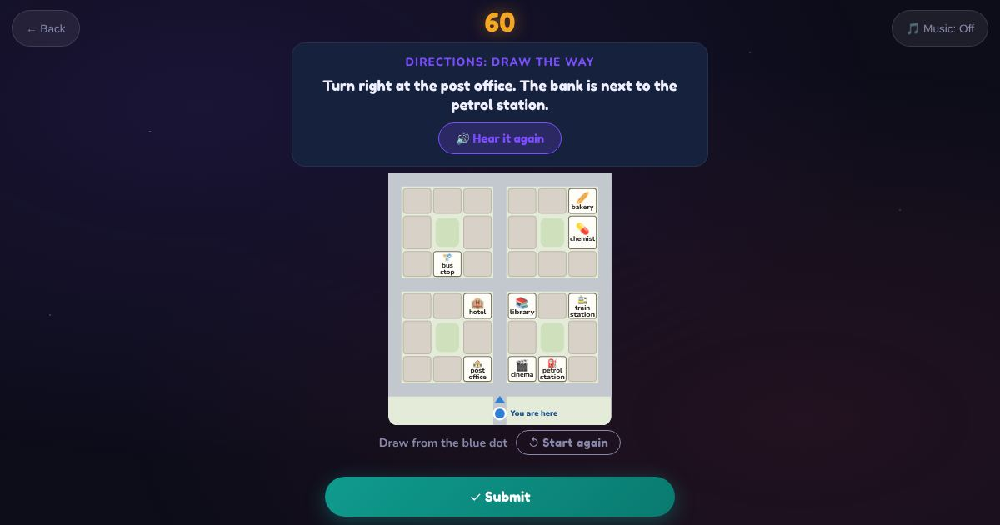

For teachers and tutors
About Directions
Giving and following directions on a street map. The learner hears and reads directions such as "Go straight ahead. Turn left at the bank. The post office is next to the café." and draws the way with a finger, from You are here to the building the sentence describes. The place they are looking for has no name on the map, so the place words (next to, opposite, between, on the corner) are what find it. Directions start short and get longer through the game.

How to play
- Listen to the directions.
- Start at the blue dot.
- Draw the way to the place.
Play it as a class
Choose Directions in the Teacher Game. The map goes on the projector, and the answer screen shows who found the place, who went another way and who stopped at the wrong building.